ADRs 0001–0005 · ingest
docs/adrs/
Five decisions
Ingest → landing is cut, signed, closed. Tuesday’s Consensus stands.
The parser owns grammar, privacy, money, first write. Downstream never re-earns them.
Yesterday the Translator signed ingest → landing. Tonight the pipeline builds itself — bronze to gold — with you validating. Unresolved golden-match is not Gold. One Night.
Nobody re-parses tonight. dlt registers landing. Zero unexplained differences on Type 01. Mesh is seed — not lights-out.
The pipeline builds itself — bronze to gold — with you validating.

Each engine exists because a seam leg needs exactly one owner. ADR 0006’s parked rows are the questions — who registers, where tables live, who transforms, who judges — and these four cards are the answers you sign tonight.
The same kits as Tuesday, pointed at a new seam — dlt → Gold. Same pass numbers, different legs. Nothing here is new to learn; what is new is what they cut tonight.


contracts/. Then catalog_ask without, then with. Never grep SQL.plans/modern.md. Relationship · split plants · runtime flow. Quote the repo. Dagster on the flowchart is Thursday. Not an ADR.reporting.card_settlement_reconciliation, grain batch_id + currency. Then three mermaids from plans/modern.md. Notebook still nine sources. No git writes.Tuesday burned 2–4 on ingest and signed. Tonight the same middle burns on seam 2 — dlt → Gold: unpark, cut, sign, then leaves. Nothing upstream reopens.
An architecture-aware decomposition compiler. Out comes not a list of tasks but the system's own joints made explicit — seams, swimlanes, capability legs and the ordering between them — reviewed by a human, compiled into a plan other engines can contract on.
SeamWise decomposes. Task-Spec contracts. Converge coordinates.
The boundary is the product: it maps evidence-backed seams, gives each seam one owning swimlane, lowers work into capability legs — then stops. It never materializes tasks and never dispatches.
docs/. Tonight is lakehouse. Thursday is 02–05 + loop. Do not start Pass 2 yet.consensus.md.docs/seams.md seam 2 has three legs. docs/consensus-lakehouse.md is signed. Ingest consensus.md is unchanged. No modern/ code yet.The signed facts become leaves under docs/tasks/. Every leaf is born signed_off: false; every eval does one thing — rebuild Gold from landing and assert the classification. A green run with an unresolved difference fails the leaf.
Intent, evidence, and a runnable eval in one Task-Spec. It quotes ADR 0006 and the contract for every structural choice — the same shape as Tuesday’s parser leaf.
From landing, on a laptop, twice, identically — then which of the six codes the batch earned. “dbt ran” is a log line, not an eval.
No leaves for Types 02–04. No Type 05 — and no empty Type 05 package to look busy. Type 06 stays sealed. A leaf that exists is a leaf that gets cranked.
SeamWise again, then Task-Spec generates the remaining SWE + DE leaves — 02–04, Type 05, orchestrate — and the Mesh with Pass 6–8 cranks the queue.
signed_off: false.docs/tasks/ for emit (if needed), register, B/S/G, match. Each has a runnable eval. signed_off is false. No Type 05 package.cvg — the agent still writes docs/tasks/.valid-minimal Parquet under modern/landing/. df-source-001 emits zero Parquet. Keep 173.44. Frozen folders untouched.

valid-minimal both yes. DF-SOURCE-001 = CONFIRMED_SOURCE_DEFECT, no Gold. Malformed classified. Do not rewrite the referee.valid-minimal both questions yes. DF-SOURCE-001 is CONFIRMED_SOURCE_DEFECT with no Gold. Packet under evidence/modern/. Referee unchanged.golden_match.py. Hunt a legacy defect (Friday). Open Type 06. Skip to Type 05.